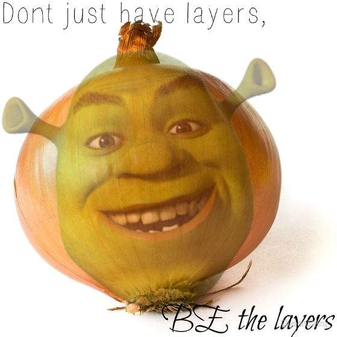

Once upon a time there was a lovely princess. But she had an enchantment upon her of a fearful sort which could only be broken by love's first kiss. She was locked away in a castle guarded by a terrible fire-breathing dragon. Many brave knights had attempted to free her from this dreadful prison, but non prevailed. She waited in the dragon's keep in the highest room of the tallest tower for her true love and true love's first kiss. (laughs) Like that's ever gonna happen. What a load of - (toilet flush)
Allstar - by Smashmouth begins to play. Shrek goes about his day. While in a nearby town, the villagers get together to go after the ogre.
MAN1: Think it's in there?
MAN2:All right. Let's get it!
MAN1: Whoa. Hold on. Do you know what that thing can do to you?
MAN3: Yeah, it'll grind your bones for it's bread.
Shrek sneaks up behind them and laughs.
SHREK: Yes, well, actually, that would be a giant. Now, ogres, oh they're much worse. They'll make a suit from your freshly peeled skin.
MEN: No!
SHREK: They'll shave your liver. Squeeze the jelly from your eyes! Actually, it's quite good on toast.
MAN1:Back! Back, beast! Back! I warn ya! (waves the torch at Shrek.)
Shrek calmly licks his fingers and extinguishes the torch. The men shrink back away from him. Shrek roars very loudly and long and his breath extinguishes all the remaining torches until the men are in the dark
SHREK:This is the part where you run away. (The men scramble to get away. He laughs.) And stay out! (looks down and picks up a piece of paper. Reads.) "Wanted. Fairy tale creatures."(He sighs and throws the paper over his shoulder.)
As viewers we can see here that shrek nonchanontaly accepts his fate as an angry beast, but even at this state of the movie he is tired of the pattern of fear. He just wishes to be left alone, tired of trying to reach out only to be met with scorn. We can also see the hunting of fairy tale creatures as an allegory for the persecution of minorities in the real world, a problem that has become more discrete but perhaps ewually prevalent as it used to be. Marginalized people may heavily relate to shrek in this way due to the treatment they face in real life. The predjudice we hold may cause even the most careful person to repeat cycles of hate.
This message carries out throughout the movie to build the most beautiful story many hold close to their hearts today. Shrek represents more than just Ogres. He represents pain, healing, and most importantly, onions.
